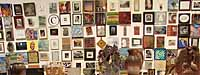

|
This article is reprinted from Arts magazine, January 2000.

The Door is Open
"For this exhibition, the door is open, you are who you want to be, and everyone's invited."
By Stewart Turnquist
WE HOMINIDS often take on more than is reasonable. Getting to the moon never did make much sense.
Nor did climbing Everest. Eating 267 goldfish in twelve minutes, the world record, also is
questionable. And who can rationally justify teaching dogs to sit up on their hind legs and
put their two front paws in the air? Just recently a flock of ducks were enticed
to quack in unison while they waddled in formation.
Now we offer something
that is reasonable: "The Foot in the Door Show 2000". All artists in the state have been
invited once again to participate in an exhibition at The Minneapolis Institute of Arts,
provided they restrict their work to the area of one cubic foot. The show, opening with
a free reception Saturday, January 8, from 8 to 11 P.M., is presented by the Minnesota
Artists Exhibition Program, also known as MAEP.
The history of "The Foot in Door Show" goes back more than twenty years. The MAEP
was conceived by artists and adopted by the Institute in 1975. In the early years
its very premise, that a curatorial department of the museum be controlled by the
artist community, was questioned. Some saw it as visionary, others as sheer folly.
MAEP was democratically driven. It acknowledged the artist's point of view as unique
and significant. It brought the living artist's voice into the museum's creative
process.